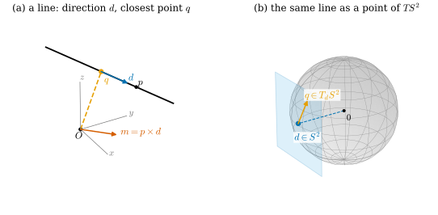
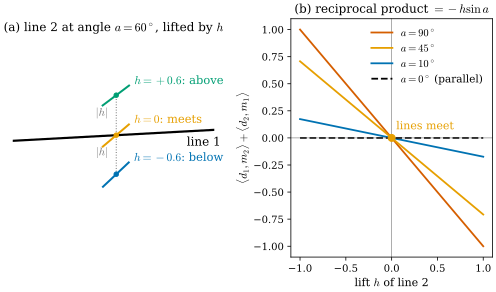
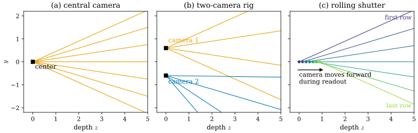

27.4 The Space of Rays
Goals
- \(\R^3\)의 oriented line 전체가 4차원 manifold이고 \(TS^2\)와 diffeomorphic하다는 것을 (방향, 원점에서 가장 가까운 점)의 좌표로 설명할 수 있다.
- Plücker 좌표 \((d, m)\)와 Klein quadric을 쓰고, 두 직선이 만나는 조건 \(\inner{d_1}{m_2} + \inner{d_2}{m_1} = 0\)을 유도해 generalized epipolar constraint로 이어 갈 수 있다.
- NeRF의 입력 \((x, d) \in \R^3 \times S^2\)가 5차원인데 light field는 4차원인 이유, 그리고 그럼에도 NeRF가 5차원을 쓰는 이유를 정확히 말할 수 있다.
- pixel을 ray 하나가 아니라 ray 공간의 작은 열린 집합(cone)으로 보고, Mip-NeRF의 cone tracing과 3DGS의 screen-space filter를 같은 말로 비교할 수 있다.
Prerequisites
- Section 27.1: fiber = ray(Proposition 27.1.1), central camera = \(S^2\)의 chart (27.1.8)
- Section 27.3: epipolar constraint (27.3.1), triangulation = 두 fiber의 교차
- Section 0.3: sphere의 tangent plane \(T_pS^2 = \{v : \inner{v}{p} = 0\}\), equirectangular image(Figure 0.3.3)
- Section 0.6: tangent space와 differential, \(\RP^n\)
- NeRF의 volume rendering [Mildenhall20], Mip-NeRF [Barron21], 3DGS의 screen-space dilation(Section 29.3)
Motivation
Section 27.3에서 대응점 하나는 두 직선이었고, triangulation은 두 직선이 만나는 점을 찾는 일이었다. 지금까지 ray와 직선은 늘 “어떤 점을 지나는 것”으로만 다뤘다. 이 절에서는 시점을 바꿔 직선 하나를 하나의 점으로 보고, 직선 전체의 공간을 manifold로 다룬다.
이 관점이 필요한 곳이 3D vision에 여럿 있다.
- NeRF는 \((x, d)\), 곧 5개의 수를 입력으로 받는다. 그런데 light field는 4차원이라고 한다. 어느 쪽이 맞는가?
- multi-camera rig나 rolling shutter 카메라는 모든 pixel의 ray가 한 점을 지나지 않는다. 이런 카메라의 epipolar geometry는 무엇인가?
- Mip-NeRF는 ray 대신 cone을 따라가고 3DGS는 화면에서 covariance를 더한다. 둘은 같은 일을 하는가?
Oriented Lines Form a 4-Manifold
직선 하나를 정하는 데 필요한 수를 세어 보자. 방향 \(d \in S^2\)가 2개, 그리고 그 방향의 평행선 가운데 하나를 고르는 데 2개(방향에 수직인 평면 위의 점)다. 이것을 정확히 하면 다음과 같다.
Proposition 27.4.1 (oriented lines = \(TS^2\)). oriented line \(\{p + sd : s \in \R\}\)(\(d \in S^2\))에
\[ (d,\ q), \qquad q = p - \inner{p}{d}\,d \in d^\perp = T_dS^2 \]
를 대응시키면 oriented line 전체와 tangent bundle \(TS^2 = \{(d, q) : d \in S^2,\ \inner{q}{d} = 0\}\) 사이의 bijection이 된다. \(q\)는 원점에서 직선까지 가장 가까운 점이다. \(\R^3 \times S^2 \to TS^2\), \((p, d) \mapsto (d, q)\)는 submersion이고, 그 fiber \(\{(p + sd, d)\}\)가 직선 자신이다. 그래서 oriented line의 공간은 \(5 - 1 = 4\)차원 manifold다.
Derivation. \(q\)는 \(p\)에서 \(d\) 방향의 성분을 뺀 것이므로 \(\inner{q}{d} = 0\)이고, 직선 위의 다른 점 \(p + sd\)를 써도 같은 \(q\)가 나온다. \(\abs{p + sd}^2\)를 \(s\)에 대해 최소화하면 \(s = -\inner{p}{d}\)이므로 \(q\)가 가장 가까운 점이다. 역으로 \((d, q)\)는 직선 \(\{q + sd\}\)를 돌려준다. map \((p, d) \mapsto (d, q)\)는 smooth이고, \(p\)를 \(d^\perp\) 안에서 움직이면 \(q\)가 그대로 움직이므로 differential은 surjective다(verify에서 rank 4를 확인했다). kernel은 \((d, 0)\), 곧 직선을 따라 \(p\)를 미끄러뜨리는 방향이다.
이것은 Proposition 27.1.1과 같은 모양이다. 거기서는 3D 점을 pixel로 보내는 map의 fiber가 ray였고, 여기서는 (점, 방향)을 직선으로 보내는 map의 fiber가 직선 위의 점들이다. 방향이 없는 직선은 \((d, q)\)와 \((-d, q)\)를 같게 본 것이므로 oriented line의 공간이 그것을 2대1로 덮는다. 둘 다 4차원이다.

Figure 27.4.1의 (a)에서 직선 위의 점 \(p\)를 아무리 바꿔도 \(d\)와 \(q\)는 그대로다. 직선이 정하는 양이기 때문이다. (b)에서는 그 두 양을 다른 방식으로 놓았다. 방향 \(d\)를 sphere의 점으로, \(q\)를 그 점의 tangent vector로 보면 직선 하나가 \(TS^2\)의 점 하나다. 원점을 지나는 직선, 곧 카메라 중심을 지나는 ray는 \(q = 0\)인 점들이고, 이것이 sphere 자신(zero section)이다. central camera의 image는 이 2차원 부분에 놓인다.
Plücker Coordinates and the Klein Quadric
\(TS^2\)의 좌표는 sphere의 chart가 필요해 계산이 불편하다. Plücker 좌표는 같은 정보를 \(\R^6\)의 linear 좌표로 준다. 직선 \(\ell = \{p + sd\}\)에 대해
\(m\)은 직선 위의 점의 선택에 무관하다(\((p + sd) \times d = p \times d\)). \(\inner{d}{m} = 0\)은 정의에서 바로 나오고, \(\abs{d} = 1\)이면 \(\abs{m} = \abs{q}\)는 원점에서 직선까지의 거리다. 방향이 없는 직선은 \((d, m)\)과 \((\lambda d, \lambda m)\)(\(\lambda \ne 0\))을 같게 보면 되므로, \(\RP^5\)의 점 \([d : m]\)이고 2차 방정식 \(\inner{d}{m} = 0\)을 만족한다. 이 hypersurface가 Klein quadric이다 [Pottmann01]. \(\inner{d}{m}\)의 gradient \((m, d)\)는 \(0\)이 아니므로 Klein quadric은 \(5 - 1 = 4\)차원 smooth manifold이고, compact다. \(\R^3\)의 직선은 그 가운데 \(d \ne 0\)인 open subset이고, \(d = 0\)인 점 \([0 : m]\)은 plane at infinity의 직선들이다(Section 27.2). Klein quadric은 \(\R^4\)의 2차원 subspace들의 공간, 곧 Grassmann manifold \(\mathrm{Gr}(2, 4)\)와 같은 것이다(Tour Section 0.8에서 이름만 나왔다). \(\RP^3\)의 projective line이 \(\R^4\)의 2차원 subspace이기 때문이다. 구체적으로, 직선 위의 점 \((p, 1)\)과 그 방향의 point at infinity \((d, 0)\)이 span하는 2차원 subspace에서 \(2 \times 2\) minor 여섯 개를 뽑으면 정확히 \((-d,\ m)\)이 나온다(Plücker embedding, verify에서 확인했다).
rigid motion \(x \mapsto Rx + T\)에서 Plücker 좌표는 linear하게 변한다. \(p \mapsto Rp + T\), \(d \mapsto Rd\)를 넣으면
이다. 점의 homogeneous coordinates처럼 직선도 \(6 \times 6\) 행렬 하나로 옮겨진다. 이것이 Plücker 좌표가 line geometry에서 쓰이는 이유다.
Proposition 27.4.2 (when two lines meet). 두 직선 \(\ell_i = (d_i, m_i)\), \(m_i = p_i \times d_i\)에 대해
이다. 따라서 이 값이 \(0\)인 것은 두 직선이 한 평면 위에 있을 때, 곧 만나거나 평행할 때이고 그때뿐이다. 평행하지 않은 두 직선(\(\abs{d_i} = 1\)) 사이의 거리는 \(\abs{\inner{d_1}{m_2} + \inner{d_2}{m_1}}/\abs{d_1 \times d_2}\)다.
Derivation. \(\inner{d_1}{p_2 \times d_2} = \det(d_1, p_2, d_2) = -\det(p_2, d_1, d_2)\)이고 \(\inner{d_2}{p_1 \times d_1} = \det(d_2, p_1, d_1) = \det(p_1, d_1, d_2)\)이다. 더하면 \(\det(p_1 - p_2, d_1, d_2) = \inner{p_1 - p_2}{d_1 \times d_2}\)다. 이것은 두 직선 위의 점을 잇는 vector가 두 방향과 한 평면에 있는지를 재는 triple product이고, 거리 공식은 그것을 공통 수직선 방향 \(d_1 \times d_2\)의 길이로 나눈 것이다.
이 값을 두 직선의 reciprocal product라 부른다. Klein quadric의 2차 형식 \(\inner{d}{m}\)에서 나오는 symmetric bilinear form이다(\(\inner{d}{m}\)은 직선 자신과의 reciprocal product의 절반이다).

Figure 27.4.2의 (a)에서 세 색 선분은 방향이 같고 높이 \(h\)만 다르다. 주황만 line 1과 만나고, 초록과 파랑은 공통 수직선을 따라 \(0.6\)만큼 위와 아래로 비켜 지나간다. (b)는 이 높이를 가로축으로 놓고 reciprocal product를 그린 것이다. 네 직선은 모두 원점을 지난다. 만나는 경우가 정확히 \(0\)이라는 것은 이 값을 triangulation이나 대응점 검증의 판정식으로 쓸 수 있다는 뜻이다. 다만 값의 크기는 거리와 두 방향 사이의 각의 곱이므로, 거의 평행한 ray 쌍(작은 triangulation 각)에서는 거리가 커도 값이 작다. Section 27.3에서 본 작은 \(\gamma\)의 문제가 여기서도 나타난다.
Five Dimensions or Four: NeRF and the Light Field
NeRF는 장면을 “각 점 \((x, y, z)\)에서 각 방향 \((\theta, \varphi)\)으로 방출되는 radiance와 각 점의 density”라는 5D 함수로 나타낸다 [Mildenhall20]. 입력 공간 \(\R^3 \times S^2\)는 5차원이다. 한편 흡수, 산란, 방출이 없는 빈 공간(안개나 연기 같은 participating medium도, 굴절도 없다고 가정한다)에서 빛은 직선을 따라 진행하고 radiance는 그 직선을 따라 일정하다. 그래서 카메라가 모두 장면의 convex hull 바깥에서 장면을 들여다본다면, 카메라가 기록하는 것은 빛이 hull을 빠져나온 뒤의 radiance이고 그 값은 oriented line 하나에 하나씩 정해진다. 이 radiance, 곧 light field는 oriented line의 공간(4차원) 위의 함수다 [Levoy96], [Gortler96]. Proposition 27.4.1의 말로 하면, 5D 함수 \(L(x, d)\)를 hull을 빠져나온 쪽의 점 \(x\)로 제한하면 submersion \((x, d) \mapsto (d, q)\)의 fiber(직선) 위에서 일정하므로 \(TS^2\)(의 open subset) 위의 함수로 내려간다. 같은 직선이라도 빛이 hull에 들어가기 전의 구간은 장면 바깥이지만 값이 다르다(배경의 빛이다). 직선이 물체를 지나면 \(L\)은 직선 위의 빈 구간마다 따로 일정할 뿐이다.
![위아래 두 패널. 위 (a)는 가로축 x(0부터 7.5)의 2D 장면으로, 회색 원 A(중심 2, 반지름 0.6, c = 0.9)와 B(중심 4.5, 반지름 0.8, c = 0.3)가 있고, 높이 0.1의 검은 가로선이 두 원을 지난다. 선 위 s = 1, 3.2, 6.5에 파란 사각형 camera가 오른쪽(+x)을 보는 화살표와 함께 있다. 각 사각형 아래에 s 값이 적혀 있고, 왼쪽 아래에 'blue: cameras looking toward +x', 오른쪽 아래에 왼쪽을 향하는 주홍 화살표 'light direction d'가 있다. 아래 (b)는 가로축 position s, 세로축 radiance L(s)인 그래프로, 검은 곡선이 s = 0부터 약 2.5까지 0.9, 2.5 부근에서 0.3으로 떨어진 뒤 s = 5.2 부근까지 0.3, 그 뒤 0이다. 회색 영역(density σ, 오른쪽 축)이 s = 1.4–2.6과 3.7–5.3에 높이 25로 있고, 하늘색 띠가 그 사이의 빈 구간(0–1.2, 2.8–3.6, 5.5–7.5)을 표시한다. 띠마다 L = 0.9, L = 0.3, L = 0.0이 적혀 있다.](figures/fig-27-4-3-light-field.svg)
Figure 27.4.3의 (b)를 빛이 진행하는 방향(주홍 화살표, 오른쪽에서 왼쪽)으로 따라가자. B의 오른쪽에는 광원이 없으므로 셋째 하늘색 띠에서 \(L = 0\)이다. 빛이 B를 지나면서 B가 자기 빛을 더해 \(L\)이 \(0.3\)으로 올라가고, 둘째 띠에서는 \(0.3\)으로 일정하다. A를 지나면서 A가 그 \(0.3\)을 흡수하고(density가 높아 거의 다) 자기 빛 \(0.9\)를 더한다. 첫 띠에서는 \(0.9\)로 다시 일정하다. 카메라의 입장에서 읽어도 같다. 첫 띠 안 어디에 카메라를 두어도 \(+x\)를 보면 A의 빛 \(0.9\)만 보인다. 그러므로 radiance는 \((x, d)\)의 함수로서 직선을 따라 조각마다 일정하다. 장면 바깥에서 장면을 들여다보는 카메라는 빛이 장면을 빠져나온 뒤의 구간(이 그림의 첫 띠)에 있으므로, 그런 카메라들에게는 직선 하나에 값 하나가 대응한다(4D light field). 같은 직선의 반대쪽 끝(셋째 띠)도 장면 바깥이지만 값이 \(0\)으로 다르다. 그쪽에서 \(+x\)를 보는 카메라는 장면이 아니라 빈 배경을 보기 때문이다. 장면 안에서는 직선 위의 위치가 필요하다.
Generalized Cameras
central camera는 pixel마다 카메라 중심을 지나는 ray 하나를 준다. 이것을 넓혀, pixel마다 임의의 직선 하나를 주는 map
\[ \ell\colon \text{image} \to \{\text{lines in } \R^3\}, \qquad u \mapsto \ell(u) = (d(u),\ m(u)) \]
을 generalized camera라 한다 [Pless03]. calibration은 pixel마다 이 Plücker 좌표를 정하는 일이 된다. central camera는 \(m(u) = c \times d(u)\)인 경우, 곧 image가 “\(c\)를 지나는 직선들”이라는 2차원 부분(\(TS^2\)에서 \(q = 0\)인 sphere를 \(c\)로 옮긴 것)에 놓이는 경우다. 다음 카메라들은 그렇지 않다.
- multi-camera rig. 중심이 다른 카메라 여럿을 하나의 카메라로 보면, image는 여러 개의 central 부분의 합집합이다.
- rolling shutter. 행을 차례로 읽는 동안 카메라가 움직이면 행마다 중심(과 방향)이 다르다. image는 한 점을 지나지 않는 직선들의 2차원 family다. 시간에 따라 연속적으로 변하는 pose로 이것을 다루는 것이 continuous-time 표현이다 [Lovegrove13](Section 28.4의 cumulative B-spline).

Figure 27.4.4의 세 패널에서 바뀌는 것은 ray의 출발점뿐이다. (a)에서 (c)로 갈수록 image가 직선 공간 안에서 차지하는 모양이 “한 점을 지나는 직선들”에서 벗어난다. 그래서 epipolar constraint도 일반화해야 한다. 두 시점에서 같은 3D 점을 본 두 ray는 만나야 하므로, Proposition 27.4.2의 조건을 쓰면 된다.
Proposition 27.4.3 (generalized epipolar constraint). rig 좌표 1에서 ray \((d_1, m_1)\), rig 좌표 2에서 ray \((d_2, m_2)\)가 같은 점을 보고 \(x_2 = Rx_1 + T\)이면
이다. central camera(\(m_1 = m_2 = 0\))이면 epipolar constraint (27.3.1)가 된다.
Derivation. ray 1을 좌표 2로 옮기면 (27.4.2)에 의해 \((Rd_1,\ Rm_1 + Ed_1)\)이다. 이것과 \((d_2, m_2)\)의 reciprocal product가 \(0\)이어야 하므로 \(\inner{Rd_1}{m_2} + \inner{d_2}{Rm_1 + Ed_1} = 0\)이다. 정리하면 (27.4.4)다. Pless의 generalized epipolar constraint [Pless03](그 논문의 식 (4))는 \(q_2^{\mathsf T}Rq_1' + q_2^{\mathsf T}R[T]_\times q_1 + q_2'^{\mathsf T}Rq_1 = 0\)으로 겉모양이 거의 같지만, 규약이 두 군데 다르다. 첫째, moment가 \(q' = q \times P = -m\)이다. 둘째, 그 논문의 직선 변환 식 (2) \(\langle Rq_1,\ Rq_1' + R(T \times q_1)\rangle\)은 점이 \(x \mapsto R(x - T)\)로 옮겨질 때 맞는 식이다. 곧 이 절의 \(T\)는 \(-RT_{\text{Pless}}\)이고, 이 절의 \([T]_\times R\)은 \(-R[T_{\text{Pless}}]_\times\)다. 두 부호 차이가 상쇄되어 세 항이 모두 \(+\)로 남는다(verify에서 두 규약을 각각 무작위 rig로 확인했다). 논문의 식을 옮겨 쓸 때는 moment와 translation의 규약을 함께 바꿔야 한다.
A Pixel Is an Open Set of Rays
pixel은 점이 아니라 넓이가 있는 작은 사각형이다. 그러므로 pixel 하나가 받는 빛은 ray 하나가 아니라, 카메라 중심에서 그 사각형을 지나는 ray 전체, 곧 직선 공간의 작은 open set(central camera에서는 사각뿔)에서 온다. ray 하나로 sample하면 이 집합 안에서 radiance가 크게 변할 때 aliasing이 생긴다. 해결책은 이 집합 위에서 평균하는 것이다.
- Mip-NeRF [Barron21]는 pixel의 사각뿔을 cone으로 바꾸고, sample 구간 \([t_0, t_1]\)마다 conical frustum을 하나의 Gaussian으로 근사해 그 위에서 positional encoding을 적분한다. 공식 코드는 깊이 1에서 cone의 반지름을 이웃 pixel의 ray 방향 사이 거리(깊이 1의 평면 위에서 잰 pixel 너비 \(1/f\))의 \(2/\sqrt{12} \approx 0.577\)배로 둔다(
internal/datasets.py의radii = dx[..., None] * 2 / np.sqrt(12)). 논문은 이 값을 image plane에서 cone의 cross-section의 \(x\), \(y\) 분산이 pixel footprint의 분산과 같아지도록 고른 것이라고 설명한다 [Barron21]. 실제로 반지름이 \(\rho\)인 disk의 한 축 방향 분산은 \(\rho^2/4\)이고 너비 1인 사각형의 분산은 \(1/12\)이므로, 둘을 같게 놓으면 \(\rho = 2/\sqrt{12}\)다. 이 반지름은 pixel의 내접원(\(0.5\))과 외접원(\(0.707\)) 사이에 있다(코드 주석은 이 점으로 설명한다). conical frustum의 Gaussian은 축 방향 분산 \(\sigma_t^2\)와 가로 방향 분산 \(\sigma_r^2\)로 \(\Sigma = \sigma_t^2\,dd^{\mathsf T} + \sigma_r^2\big(I_3 - dd^{\mathsf T}/\abs{d}^2\big)\)이다(internal/mip.py의lift_gaussian). - 3DGS [Kerbl23]는 반대로 Gaussian을 화면에 투영한 뒤 화면에서 \(0.3\,I_2\)(pixel²)를 더하고(Section 29.3), Mip-Splatting [Yu24]은 그 대신 pixel의 box filter를 흉내 내는 분산 \(0.1\)의 Gaussian을 쓴다.
internal/mip.py의 공식으로 계산한 Gaussian. (b) image plane 위의 footprint를 pixel 단위로 그렸다. 읽는 법: (a)에서 하늘색 쐐기가 pixel 사각형을 지나는 ray 전체의 cross-section, 주홍 점선이 Mip-NeRF의 cone, 회색 세로선이 conical frustum의 경계, 주황 ellipse가 각 conical frustum의 \(1\sigma\) Gaussian(가로 반축 \(\sigma_t\), 세로 반축 \(\sigma_r\))이다. (b)의 곡선은 넓이가 1이 되게 정규화했다. 회색이 pixel 사각형(분산 \(1/12\)), 주홍이 같은 분산 \(1/12\)의 Gaussian(Mip-NeRF의 disk와 분산이 같다), 초록 점선이 Mip-Splatting의 2D filter(분산 \(0.1\)), 파랑이 3DGS의 dilation(분산 \(0.3\))이다. 볼 것: (a)에서 Gaussian은 깊이에 비례해 커지고, conical frustum이 길수록 축 방향으로도 길다. 같은 pixel이 먼 곳에서는 더 넓은 영역을 평균한다. (b)에서 주홍과 초록은 거의 겹치고(표준편차 \(0.289\)와 \(0.316\) px) pixel 사각형과 같은 크기다. 3DGS의 dilation(표준편차 \(0.548\) px)은 그보다 두 배쯤 넓다. 본문과의 연결: Mip-NeRF와 Mip-Splatting의 filter는 모두 “pixel = 한 pixel 크기의 ray 집합”을 근사한다. verify에서 conical frustum 안의 고른 점들로 mip.py의 평균과 분산을 Monte Carlo로 확인했다(2% 이내).Figure 27.4.5의 (a)에서 주황 ellipse를 가까운 것부터 보자. 같은 pixel의 cone인데 깊이 \(t\)가 두 배가 되면 가로 반축도 두 배가 된다. 같은 장면을 멀리서 찍으면 한 pixel이 더 넓은 영역의 빛을 평균한다는 사실을, Mip-NeRF는 3D 공간의 Gaussian 크기로 네트워크에 알려 준다. (b)는 같은 일을 화면에서 본 것이다. 3D의 cone을 화면으로 투영하면 pixel 크기의 footprint가 되고, Mip-Splatting의 2D filter는 그것을 분산 \(0.1\)로, Mip-NeRF는 \(1/12\)로 근사한다. 3DGS의 \(0.3\)은 aliasing을 막는 데는 충분하지만 pixel 하나보다 넓다. 이것은 Section 29.3에서 본 대로 정점을 정규화하지 않는 문제와 함께 zoom-out artifact로 이어진다 [Yu24].
Omnidirectional Cameras: Charts of the Sphere of Directions
central camera의 image는 직선 공간에서 “한 점 \(c\)를 지나는 oriented line”의 부분, 곧 방향의 sphere \(S^2\)다. 그래서 카메라 모델은 \(S^2\)의 chart이고((27.1.8)), 360° 카메라는 그 chart가 거의 전체를 덮는 경우다.
- equirectangular. colatitude와 longitude \((\theta, \varphi)\)를 그대로 pixel 좌표로 쓰는 chart다(Tour Figure 0.3.3). 극에서 chart가 singular하고(경도 한 줄 전체가 한 점으로 간다), pixel 하나가 덮는 solid angle이 \(\sin\theta\)에 비례한다. colatitude \(10^\circ\)의 pixel은 적도의 pixel보다 solid angle이 \(\sin 10^\circ = 0.174\)배, 곧 5.8배 작다. COLMAP의 main 브랜치에는 이 chart를 쓰는
EQUIRECTANGULAR모델이 있다(Section 27.1). - cube map. 여섯 면이 각각 화각 \(90^\circ\)의 gnomonic chart이고, 여섯 chart가 \(S^2\)의 atlas를 이룬다(Tour Section 0.5). 면 위의 점 \((u, v, 1)\)에서 pixel의 solid angle은 \((1 + u^2 + v^2)^{-3/2}\,du\,dv\)이므로, 면의 모서리(\(u = v = 1\)) pixel은 면 중심 pixel보다 \(3\sqrt3 = 5.2\)배 작은 solid angle을 덮는다.
- fisheye. equidistant chart는 optical axis 둘레의 normal coordinates였다(Section 27.1). 반지름 방향 배율이 1이므로 solid angle은 \(\sin\theta/\theta\)배로만 변한다(\(90^\circ\)에서 \(0.64\)).
equisolid처럼 넓이를 보존하는 chart를 쓰면 pixel마다 같은 solid angle을 덮게 할 수는 있다. 그러나 Theorema Egregium 때문에 어떤 chart도 pixel이 덮는 방향 집합의 모양까지 어디서나 같게 할 수는 없다(Corollary 0.5.3). pixel이 덮는 ray 집합의 크기와 모양이 영상 위치마다 다르므로, 화면에서 크기가 일정한 filter(예: 3DGS의 \(0.3\) pixel²)는 방향 공간에서 일정하지 않은 filter다. 360° 영상에서 anti-aliasing과 densification의 기준을 pixel 단위로 정하면 극 근처와 적도 근처가 다르게 다뤄진다(해석이다).
Summary
- oriented line 전체는 4차원 manifold이고 (방향 \(d\), 원점에서 가장 가까운 점 \(q\))로 \(TS^2\)와 같다. \((x, d) \mapsto\) 직선은 submersion이고 그 fiber가 직선 위의 점들이다.
- Plücker 좌표 \((d, m = p \times d)\)는 \(\inner{d}{m} = 0\)을 만족하고, 방향 없는 직선은 \(\RP^5\)의 Klein quadric(4차원)이다. 두 직선은 \(\inner{d_1}{m_2} + \inner{d_2}{m_1} = 0\)일 때(만나거나 평행) 한 평면 위에 있다.
- generalized camera는 pixel에서 직선 공간으로 가는 map이다. 그 epipolar constraint \(d_2^{\mathsf T}Ed_1 + d_2^{\mathsf T}Rm_1 + m_2^{\mathsf T}Rd_1 = 0\)은 Plücker 교차 조건이고, moment 항 때문에 scale이 보인다.
- 흡수·산란·방출이 없는 빈 공간에서 radiance는 직선을 따라 일정하므로, 장면 바깥에서 장면을 들여다볼 때의 light field(빛이 장면을 빠져나온 뒤의 radiance)는 oriented line의 공간 위의 함수, 곧 4차원이다. NeRF는 volume rendering의 integrand(\(\sigma(x)\), \(c(x, d)\))를 배우므로 5차원이 필요하다. 가림과 장면 안의 카메라도 직선 위의 위치를 요구한다.
- pixel은 ray 공간의 open set이다. Mip-NeRF의 cone(radius factor \(2/\sqrt{12}\), pixel과 같은 분산)과 Mip-Splatting의 분산 \(0.1\) filter는 같은 크기의 집합을 근사하고, 3DGS의 \(0.3\)은 그보다 넓다. 360° 카메라에서는 pixel이 덮는 solid angle이 위치마다 5배 넘게 달라진다.
이것으로 이 장을 마친다. 다음 장(Chapter 28)에서는 이 장에서 계속 고정된 것으로 둔 pose \((R, T)\) 자체를 다룬다. pose 전체는 Lie group \(\mathrm{SE}(3)\)이고, essential manifold 위의 최적화와 bundle adjustment는 그 위의 미분과 retraction으로 계산된다. 이 장에서 Go deeper로 미룬 엄밀한 정의는 Chapter 2, Chapter 11, Chapter 14에 있다.
Quick check
Exercise 27.4.1 ★ 점 \((1, 0, 0)\)을 지나고 방향이 \((0, 1, 0)\)인 직선의 Plücker 좌표 \((d, m)\)와 원점에서 가장 가까운 점 \(q\)를 구하여라. 같은 직선 위의 점 \((1, 5, 0)\)으로 계산해도 같은가?
Solution
\(m = (1, 0, 0) \times (0, 1, 0) = (0, 0, 1)\)이고 \(q = d \times m = (0, 1, 0) \times (0, 0, 1) = (1, 0, 0)\)이다. \((1, 5, 0) \times (0, 1, 0) = (0, 0, 1)\)로 같다. \(\abs{m} = 1\)은 원점에서 직선까지의 거리이고, \(m\)은 원점과 직선이 이루는 평면 \(z = 0\)의 normal이다.
Verification: verify/v-27-4-space-of-rays.py
Exercise 27.4.2 ★ \(z\)축과 Exercise 27.4.1의 직선의 reciprocal product를 구하고, 두 직선 사이의 거리를 Proposition 27.4.2로 구하여라.
Solution
\(z\)축은 \((d_1, m_1) = ((0, 0, 1), 0)\)이고 \((d_2, m_2) = ((0, 1, 0), (0, 0, 1))\)이다. \(\inner{d_1}{m_2} + \inner{d_2}{m_1} = 1 + 0 = 1 \ne 0\)이므로 만나지 않는다. \(\abs{d_1 \times d_2} = \abs{(-1, 0, 0)} = 1\)이므로 거리는 \(1\)이다. 실제로 \(z\)축과 직선 \(\{(1, s, 0)\}\)의 가장 가까운 점은 \((0, 0, 0)\)과 \((1, 0, 0)\)이다.
Verification: verify/v-27-4-space-of-rays.py
Exercise 27.4.3 ★ 다음 공간들의 dimension을 세어라: (i) NeRF의 입력 \(\R^3 \times S^2\), (ii) oriented line의 공간, (iii) Klein quadric, (iv) 한 점을 지나는 oriented line의 공간. light field를 two-plane parametrization \((u, v, s, t)\)로 쓰는 것은 어느 것의 chart인가?
Solution
(i) \(3 + 2 = 5\), (ii) \(4\)(Proposition 27.4.1), (iii) \(\RP^5\)의 hypersurface이므로 \(4\), (iv) \(S^2\)이므로 \(2\)다. 두 평행한 평면과의 교점 \((u, v)\), \((s, t)\)로 직선을 적는 two-plane parametrization [Levoy96]은 (ii)(또는 방향을 무시하면 (iii))의 chart이고, 두 평면에 평행한 직선은 이 chart에 들어오지 않는다. chart 하나가 manifold 전체를 덮지 않는 또 하나의 예다.
Verification: verify/v-27-4-space-of-rays.py
Exercise 27.4.4 ★★ rolling shutter 카메라가 1 m/s로 앞으로 움직이고, 영상 하나를 읽는 데 30 ms가 걸린다. 첫 행과 마지막 행의 카메라 중심은 얼마나 떨어져 있는가? 이 카메라를 central camera로 모델링하면 (27.4.4)의 어느 항을 버리는 것인가?
Solution
\(1 \times 0.030 = 0.03\) m, 곧 3 cm다. 행 \(k\)의 ray는 중심 \(c_k\)를 지나므로 moment가 \(m = c_k \times d\)이고, 공통 기준점을 첫 행의 중심으로 잡으면 행마다 크기가 최대 \(0.03\abs{d}\) 정도인 moment가 남는다. central camera로 모델링하면 이 \(m_1, m_2\)를 \(0\)으로 두므로 \(d_2^{\mathsf T}Rm_1 + m_2^{\mathsf T}Rd_1\) 항을 버린다. 중심이 ray에 수직인 방향으로 \(\delta\)만큼 어긋나면 거리 \(z\)인 점의 방향은 약 \(\delta/z\)만큼 어긋나므로, 장면이 가까울수록 그 영향이 크다(\(\delta = 3\) cm, \(z = 1\) m이면 \(0.03\) rad, 곧 \(f = 800\) px에서 약 24 px. 앞으로 움직이면 영상 중심 근처의 ray는 중심의 이동과 거의 평행하므로 영향이 작고, 가장자리로 갈수록 커진다).
Verification: verify/v-27-4-space-of-rays.py
Exercise 27.4.5 ★★ \(f = 800\) px인 카메라에서 Mip-NeRF의 cone은 깊이 5 m에서 반지름이 얼마인가? 같은 pixel에 대해 3DGS의 dilation \(0.3\) pixel²는 깊이 5 m에서 몇 mm의 표준편차에 해당하는가?
Solution
공식 코드는 이웃 pixel의 방향 vector를 깊이 1의 평면 위에서 재므로 그 거리가 정확히 \(1/f\)이고, 반지름은 \(5 \times (2/\sqrt{12})/800 = 3.6\) mm다. dilation의 표준편차 \(\sqrt{0.3} = 0.548\) px는 깊이 5 m에서 \(5 \times 0.548/800 = 3.4\) mm다. disk의 한 축 표준편차로 비교하면 Mip-NeRF는 \(3.6/2 = 1.8\) mm, 3DGS의 dilation은 \(3.4\) mm로 약 두 배다(Figure 27.4.5(b)의 \(0.289\) 대 \(0.548\) px).
Verification: verify/v-27-4-space-of-rays.py